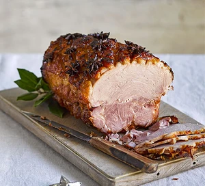

Marmalade, ginger & star anise baked ham

Description
Bake a gammon joint with a marmalade, ginger and star
anise glaze for a centrepiece main course.
It's ideal at Christmas time or for Sunday lunch.
Ingredients
- 1/2 small bunch of parsley
- 2 1/2kg gammon joint, rolled and tied
- 1 onion, halved
- 2 celery sticks, halved
- 2 carrots, halved
- 3 bay leaves
- 10 black peppercorns
- 500ml cider
- 500ml orange juice
For the glaze
- 150g marmalade
- 100g light brown soft sugar
- 2 limes, juiced
- 2cm piece of ginger, peeled and grated
to a purée
- 2 star anise, plus extra to use on the
joint
Steps
- Put the gammon in a large pan and cover with
cold water. Bring to the boil, then immediatly
remove from the heat. Pour away the water and
any scum
- Add the cider and orange to the pan, followed
by enough water to cover the ham, then add the
peppercorns, onion, bay, celery, carrots and
parsley. Bring slowly to the boil, the lower to
a gentle simmer, cover and cook gently for 1/2
hrs, or until the meat is tender. Cool to room
temperature, then leave the meat in the liquid
in the fridge for up to two days until you are
to bake it.
- Heat the oven to 220C/200C fan/gas 7. Lift
the ham onto a board and, using a small
sharp knife, remove the skin and string,
leaving as much fat as possible on the
joint. Score the fat in a criss-cross
pattern, without cutting through the meat.
Put the ham in a roasting tin lined with
a double layer of foil.
- Heat the marmalade, sugar, lime juice, ginger
and 2 star anise in a saucepan until the sugar
and marmalade have melted. Leave to cool a
little so the glaze thickens.
- Spread the glaze over the ham, then push star
anise into some of the diamonds and bake for
40 mins until glossy and caramelised in patches.
Baste the ham, spooning the glaze over it, a
couple of times during the cooking time.
Leave to cool slightly before slicing and
serving.